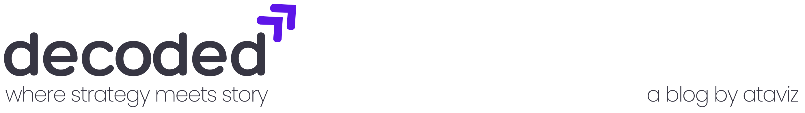
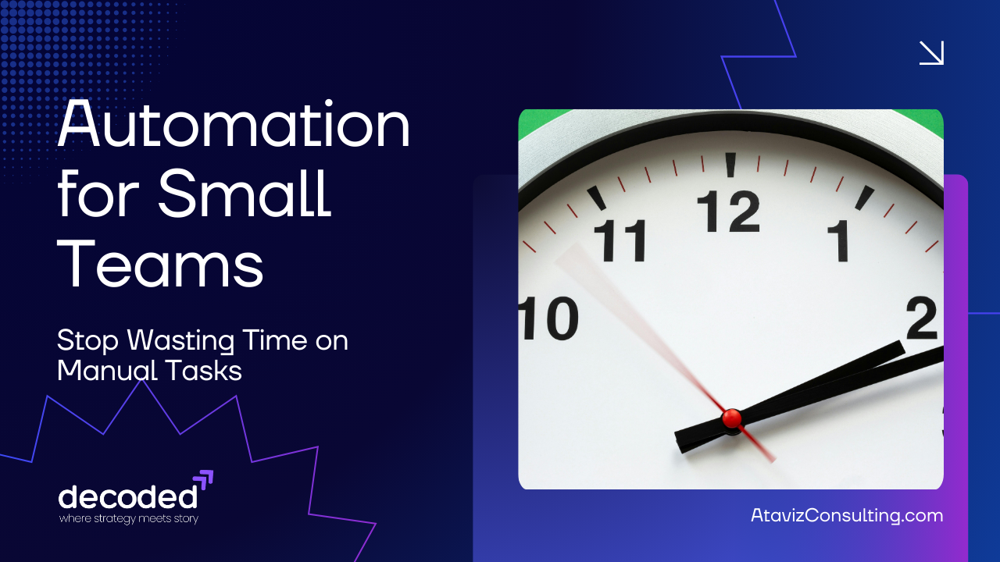

Automation for Small Teams:
Stop Wasting Time on Manual Tasks

February 18, 2026
By Nicholas Johnson, Founder of Ataviz Consulting
Small teams don’t fail because they lack vision.
They fail because they run out of time.
In most small businesses, the real bottleneck isn’t strategy, it’s manual work hiding in plain sight:
- Copying data into spreadsheets
- Manually sending follow-up emails
- Updating CRMs after every sales call (or not at all)
- Reconciling invoices line by line
- Creating the same weekly report… every single week
None of this work is “hard.”
But it is expensive.
And in 2026, it’s unnecessary.
The Automation Shift for Small Teams

For years, automation felt like something only enterprises could afford, including custom developers, six-figure systems, and long implementation cycles.
That’s over.
Tools like Zapier, Make (formerly Integromat), Microsoft Power Automate, and low-code platforms like Airtable and Bubble have fundamentally changed what’s possible for teams of 3–15 people.
You no longer need a developer.
You need clarity.
Automation isn’t about complexity.
It’s about eliminating friction.
Where Small Teams Waste the Most Time

After working with dozens of small organizations, I’ve seen the same time-drains over and over again.
Here are the workflows that consistently deliver the highest ROI when automated:
1. Lead Intake → CRM → Follow-Up
The manual version:
- Website form submission
- Someone copies it into a CRM
- Someone else sends a follow-up email
- A calendar link is manually shared
The automated version:
- Form submission instantly creates a CRM record
- Automatic lead scoring
- Personalized follow-up email sent within seconds
- Meeting link included
- Slack/Teams notification to sales
Time saved: 5–10 minutes per lead
Impact: Faster response time = higher close rates
Small teams often lose deals simply because they respond too slowly.
Automation fixes that instantly.
2. Invoicing + Payment Tracking
Manual invoicing kills operational momentum.
Automation can:
- Generate invoices when projects move stages
- Send automatic payment reminders
- Update accounting records
- Notify your team when payments clear
Tools like QuickBooks integrated with automation platforms remove hours of administrative overhead each month.
This isn’t about convenience, it’s about protecting cash flow.
3. Reporting That Builds Itself
If someone on your team spends Friday afternoons “pulling numbers,” that’s a system problem.
Instead:
- Connect CRM + marketing platform + financials
- Auto-refresh dashboards
- Deliver a weekly executive summary automatically
Platforms like Microsoft Power BI, Tableau, or embedded dashboards inside Airtable can turn reporting from a task into an asset.
Your data should inform decisions, not consume your time.
4. Client Onboarding
The difference between a chaotic onboarding and a premium experience?
Consistency.
Automated onboarding can:
- Trigger welcome emails
- Create internal tasks
- Provision accounts
- Schedule kickoff calls
- Send intake forms
- Assign project templates
Small teams feel “busy” when onboarding.
Automated teams feel scalable.
5. Internal Task Handoffs
This is the silent killer of productivity.
Sales closes a deal → operations finds out days later.
A client approves a quote → no one updates the project timeline.
Automation can connect:
- CRM → project management
- Payment received → fulfillment triggered
- Contract signed → onboarding sequence begins
When systems talk to each other, your team stops chasing information.
The Strategic Shift: Automation as Operational Leverage

Here’s the mindset change:
Automation isn’t about reducing headcount.
It’s about increasing capacity.
For a 7-person company, saving 10 hours per week is the equivalent of adding part-time staff, without adding payroll.
That reclaimed time can go toward:
- Customer experience
- Revenue-generating activities
- Process improvement
- Strategic planning
The most dangerous place for a small business to live is in reactive mode.
Automation creates breathing room.
The Future: AI + Automation

Here’s where this gets interesting.
Automation used to move data.
Now, it makes decisions.
AI can:
- Score leads automatically
- Summarize sales calls
- Draft proposals
- Categorize support tickets
- Predict churn risk
The next wave of small businesses won’t just automate tasks, they’ll automate judgment.
And the gap between automated teams and manual teams will widen fast.
Where to Start (Without Overcomplicating It)

If you’re leading a small team, don’t automate everything.
Start here:
- Identify the most repeated manual task.
- Calculate how many hours per month it consumes.
- Automate that single workflow.
- Measure the impact.
- Repeat.
Small wins compound.
Final Thoughts
Small teams don’t need more hustle.
They need better systems.
The companies that win in the next five years won’t be the ones working longer hours —
They’ll be the ones whose workflows run quietly in the background while their teams focus on what actually matters.
Strategy. Growth. Customers.
If your team is still copying and pasting data in 2026, you’re not behind because of budget.
You’re behind because of systems.
And systems are fixable.
-- Your Hidden CTO
Stay in the loop
Get updates straight to your inbox.